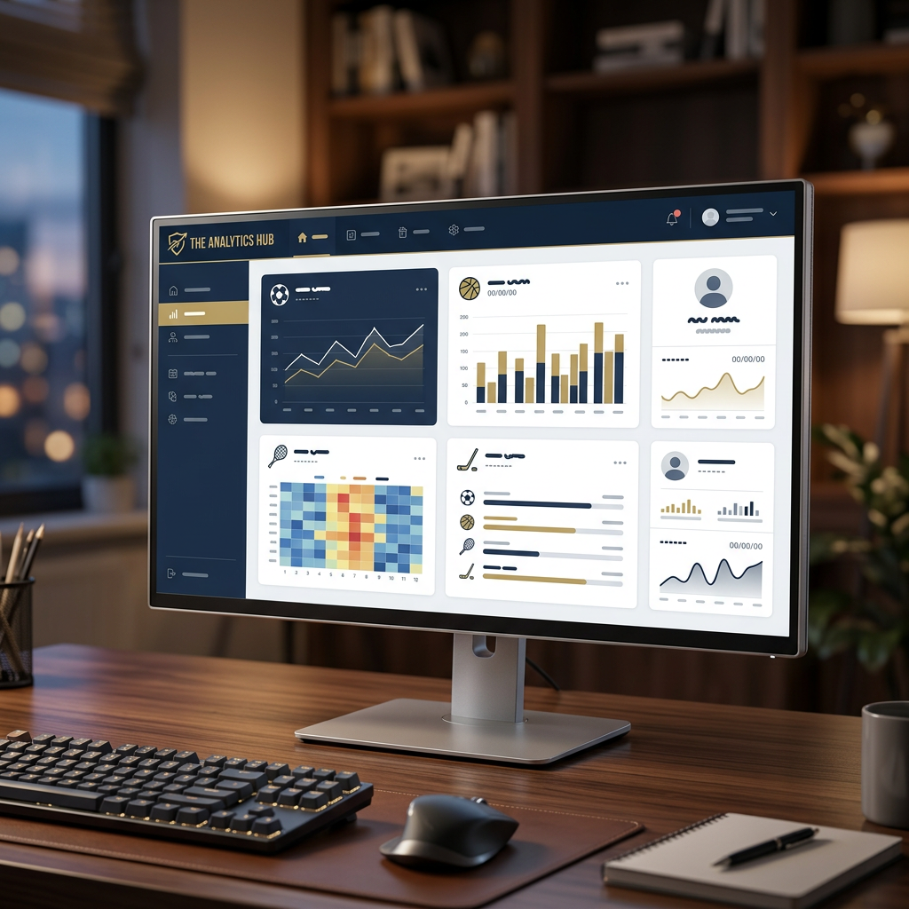
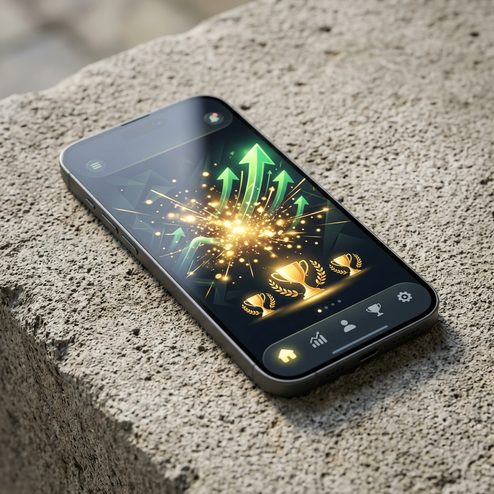

L'attente prolongée des retraits et les vérifications d'identité invasives représentent les principales frustrations des joueurs en ligne. Ces obstacles transforment souvent une victoire en source de stress. Les plateformes offshore proposent une alternative séduisante : des paiements instantanés sans les contraintes réglementaires locales strictes. Ce guide vous explique comment identifier les Casino non-AAMS avec Paiement: immédiat fiables, comprendre leurs mécanismes de paiement rapide et protéger votre confidentialité tout en récupérant vos gains sans délai.

Si vous cherchez un Casino non-AAMS avec Paiement: immédiat, vous êtes au bon endroit pour découvrir les plateformes sans restrictions.
Les joueurs recherchent désormais des solutions qui respectent leur temps et leur vie privée. Les plateformes sous licences offshore offrent exactement cela : l'accès immédiat aux fonds gagnés, sans les formalités bureaucratiques habituelles. Cette liberté financière s'accompagne toutefois de responsabilités dans le choix de la plateforme.
Pourquoi choisir un Casino non-AAMS avec Paiement: immédiat ?
Les plateformes offshore présentent des avantages significatifs pour les joueurs qui privilégient la rapidité et la discrétion. Le principal bénéfice réside dans l'élimination des délais de traitement imposés par les réglementations locales strictes. Alors que les établissements réglementés localement imposent souvent 3 à 7 jours d'attente, les alternatives offshore peuvent traiter vos demandes en quelques minutes.
La protection de la vie privée constitue un autre pilier fondamental. Ces plateformes n'exigent généralement pas de vérification d'identité exhaustive avant le premier retrait. Vous évitez ainsi l'envoi de documents sensibles comme les pièces d'identité, les relevés bancaires ou les factures de services publics. Cette approche minimale du KYC (Know Your Customer) attire particulièrement les joueurs soucieux de leur anonymat.
Molti giocatori italiani cercano casino senza aams per evitare le lunghe attese imposte dalle normative locali e godere di maggiore libertà.
L'absence de restrictions géographiques strictes permet également d'accéder à des catalogues de jeux plus vastes. Les licences offshore autorisent souvent des fournisseurs de logiciels diversifiés et des conditions de bonus plus généreuses. Les limites de Paiement: sont fréquemment plus élevées, permettant aux gros joueurs de retirer des sommes importantes sans fractionnement.
- Traitement des retraits en 5 à 30 minutes selon la méthode choisie
- Vérification d'identité simplifiée ou absente pour les petits montants
- Plafonds de Paiement: quotidiens et mensuels plus généreux
- Accès aux cryptomonnaies pour une confidentialité maximale
- Bonus sans conditions de mise excessives dans certains cas
L'importance de l'anonymat et de la confidentialité
Les licences offshore, notamment celles délivrées par Curaçao, Malta Gaming Authority ou Gibraltar, maintiennent des standards de sécurité robustes malgré des exigences KYC allégées. Le chiffrement SSL 256 bits protège toutes les transactions financières et les données personnelles transmises. Cette technologie équivaut aux standards bancaires internationaux.
L'anonymat ne signifie pas une absence totale de régulation. Les autorités offshore imposent des audits réguliers des générateurs de nombres aléatoires et des taux de redistribution. Les plateformes sérieuses affichent leur licence visiblement et publient leurs certificats d'équité. Cette transparence sélective concilie sécurité et respect de la vie privée.
Le paiement sécurisé repose sur des protocoles de blockchain pour les cryptomonnaies ou sur des intermédiaires de confiance pour les portefeuilles électroniques. Ces méthodes isolent vos informations bancaires des opérateurs de jeu. Votre banque ne voit jamais les transactions liées aux jeux d'argent, préservant ainsi votre discrétion financière.
Les risques casino sans vérification existent néanmoins. Certaines plateformes peu scrupuleuses exploitent l'absence de régulation stricte pour retarder artificiellement les paiements ou imposer des conditions abusives. La vigilance reste indispensable lors de la sélection initiale.
Les méthodes de paiement sur un Casino non-AAMS avec Paiement: immédiat
Les outils financiers modernes rendent possible la promesse de retraits instantanés. Les cryptomonnaies dominent ce secteur grâce à leur nature décentralisée et leur vitesse de transaction. Bitcoin, Ethereum, Litecoin et les stablecoins comme USDT permettent des transferts validés en quelques confirmations blockchain.
Les portefeuilles électroniques représentent l'alternative en monnaie fiduciaire. Skrill, Neteller et ecoPayz offrent des délais de traitement de quelques heures maximum. Ces services agissent comme tampon entre votre compte bancaire et la plateforme de jeu, ajoutant une couche de confidentialité supplémentaire.
Utilizzando le criptovalute e i portafogli elettronici, è facile trovare casinò non aams che pagano subito direttamente sul tuo wallet personale.
Les virements bancaires traditionnels ne conviennent pas aux retraits immédiats. Même sur les plateformes offshore, ces transactions nécessitent 2 à 5 jours ouvrables. Les cartes de crédit/débit subissent également des délais similaires et des refus fréquents de la part des institutions financières réticentes aux transactions de jeu.
| Méthode de paiement | Délai de retrait | Frais moyens | Anonymat |
|---|---|---|---|
| Bitcoin/Crypto | 5-30 minutes | 0.5-2% | Élevé |
| Skrill/Neteller | 1-6 heures | 1-3% | Moyen |
| Virement bancaire | 2-5 jours | Variable | Faible |
| Carte bancaire | 3-7 jours | 2-5% | Faible |
Les outils financiers pour des transactions éclairs
Les crypto monnaies révolutionnent les paiements dans l'industrie du jeu en ligne. Bitcoin reste la référence avec son réseau éprouvé et sa liquidité mondiale. Les transactions Bitcoin nécessitent environ 10 à 60 minutes selon la congestion du réseau et les frais de transaction choisis. Les joueurs pressés peuvent augmenter les frais pour accélérer la validation.

Ethereum offre une alternative légèrement plus rapide avec des confirmations en 2 à 5 minutes. Les frais de gaz peuvent toutefois fluctuer considérablement selon l'activité du réseau. Les tokens ERC-20 comme USDT (Tether) combinent stabilité du dollar américain et rapidité de la blockchain Ethereum.
È fondamentale scegliere siti con Paiement: immediato che offrano un'infrastruttura tecnologica moderna per elaborare le criptovalute in tempo reale.
Litecoin et Bitcoin Cash proposent des temps de traitement crypto casino encore plus courts, souvent inférieurs à 15 minutes. Leurs frais de transaction réduits les rendent particulièrement attractifs pour les petits retraits. Certaines plateformes acceptent également Ripple (XRP) dont les transactions se confirment en secondes.
Les stablecoins représentent le compromis idéal pour les joueurs réticents à la volatilité. USDT, USDC et DAI maintiennent une parité stricte avec le dollar américain. Vous évitez ainsi les variations de valeur entre le moment du Paiement: et la conversion en monnaie fiduciaire.
- Bitcoin (BTC) : fiabilité maximale, réseau le plus sécurisé
- Ethereum (ETH) : rapidité et écosystème de tokens variés
- Tether (USDT) : stabilité du dollar sans volatilité
- Litecoin (LTC) : transactions ultra-rapides et frais minimaux
- Ripple (XRP) : vitesse record pour les transferts internationaux
Comment vérifier la fiabilité d'un Casino non-AAMS avec Paiement: immédiat
La sélection d'une plateforme fiable nécessite une méthodologie rigoureuse. Commencez par vérifier la présence d'une licence offshore valide. Le numéro de licence doit être cliquable et rediriger vers le site officiel de l'autorité régulatrice. Curaçao eGaming, Malta Gaming Authority et Gibraltar Regulatory Authority figurent parmi les plus respectées.
Lisez attentivement les termes et conditions, particulièrement les sections relatives aux retraits. Identifiez les limites quotidiennes, hebdomadaires et mensuelles. Certaines plateformes imposent des plafonds qui transforment un Paiement: "instantané" en processus fractionné sur plusieurs jours. Les montants minimaux et maximaux doivent correspondre à votre profil de joueur.
Prima di depositare, verifica sempre che i siti casino non aams abbiano recensioni positive e una licenza internazionale valida per operare.
Testez le service client avant tout dépôt. Posez des questions spécifiques sur les délais de Paiement: réels et les conditions de vérification. Un support réactif disponible 24/7 par chat en direct indique généralement un opérateur sérieux. Les réponses évasives ou les temps d'attente excessifs constituent des signaux d'alarme.
Recherchez des avis d'utilisateurs sur des forums indépendants et des sites de notation. Méfiez-vous des critiques uniformément positives qui suggèrent des manipulations. Les plateformes établies accumulent naturellement quelques retours négatifs. L'important réside dans la réponse de l'opérateur aux problèmes signalés.
| Critère de vérification | Signal positif | Signal d'alarme |
|---|---|---|
| Licence | Numéro vérifiable, autorité reconnue | Absence de licence ou référence vague |
| Limites de retrait | Clairement indiquées, raisonnables | Limites extrêmement basses ou cachées |
| Support client | Disponible 24/7, multilingue | Email uniquement, réponses lentes |
| Avis utilisateurs | Variés, problèmes résolus publiquement | Absence totale ou critiques uniformes |
Vérifiez également la diversité des méthodes de paiement proposées. Une plateforme limitée à une ou deux options manque probablement de partenariats financiers solides. La présence de processeurs de paiement réputés comme Coinbase Commerce ou NOWPayments pour les cryptos renforce la crédibilité.
Bonus et conditions de mise : Ce qu'il faut savoir
Les bonus attractifs constituent souvent l'appât qui masque des conditions de mise déraisonnables. Un bonus de 200% peut sembler généreux, mais devient un piège si les exigences de rollover atteignent 50x ou 60x. Calculez toujours le montant réel à miser avant de pouvoir retirer.
Les retraits instantanés ne s'appliquent qu'aux fonds non liés à un bonus actif. Tant que les conditions de mise restent incomplètes, votre solde demeure verrouillé. Certains opérateurs divisent clairement le solde bonus du solde réel, permettant de retirer les gains casino non liés aux promotions à tout moment.
Lisez les contributions des jeux aux conditions de mise. Les machines à sous comptent généralement pour 100%, mais le blackjack et la roulette contribuent souvent à 10-20% seulement. Un casino Paiement: instantané sans document peut néanmoins bloquer les retraits si vous jouez aux mauvais jeux avec un bonus actif.
Les bonus sans dépôt et les tours gratuits présentent fréquemment des exigences encore plus strictes. Les plafonds de Paiement: limitent souvent les gains à 50-100€ maximum. Ces promotions servent principalement à tester la plateforme sans risque financier plutôt qu'à générer des profits substantiels.
- Vérifiez le multiplicateur de mise (wagering requirement)
- Identifiez les jeux éligibles et leur contribution
- Notez la mise maximale autorisée par tour avec bonus actif
- Relevez le délai d'expiration des conditions de mise
- Confirmez les plafonds de Paiement: liés aux bonus
Comparaison : Plateformes locales vs offshore
Les différences fondamentales entre les établissements régulés localement et les alternatives offshore méritent un examen approfondi. Cette comparaison aide à comprendre pourquoi certains joueurs privilégient la rapidité et la confidentialité aux garanties réglementaires strictes.
| Caractéristique | Casino régulé local | Casino offshore non-AAMS |
|---|---|---|
| Délai de retrait | 3-7 jours ouvrables | 5 minutes à 24 heures |
| Vérification KYC | Obligatoire dès le 1er retrait | Absente ou minimale |
| Documents requis | Pièce d'identité, justificatif domicile, relevés bancaires | Aucun ou email seulement |
| Méthodes de paiement | Limitées aux options approuvées | Cryptomonnaies, e-wallets variés |
| Limites de retrait | Strictes et progressives | Généreuses ou absentes |
| Protection légale | Garantie par l'autorité locale | Dépend de la licence offshore |
| Confidentialité | Données partagées avec autorités fiscales | Confidentialité maximale |
Cette comparaison illustre le compromis fondamental : sécurité réglementaire contre liberté et rapidité. Les joueurs doivent évaluer leurs priorités personnelles avant de choisir leur type de plateforme privilégié.
Meilleur moyen de paiement casino offshore
Le choix optimal dépend de vos priorités entre rapidité, frais et anonymat. Pour la vitesse absolue, les cryptomonnaies dominent incontestablement. Bitcoin reste le standard universel accepté par pratiquement toutes les plateformes offshore. Sa liquidité permet une conversion facile vers n'importe quelle devise.
Les stablecoins comme USDT offrent le meilleur moyen de paiement casino offshore pour ceux qui veulent éviter la volatilité. Vous bénéficiez de la rapidité blockchain sans risquer de perdre 5-10% de valeur pendant le transfert. La conversion en euros ou dollars s'effectue au taux stable de 1:1.
Les portefeuilles électroniques représentent l'option intermédiaire idéale. Skrill et Neteller combinent rapidité raisonnable (quelques heures) et facilité d'utilisation pour les non-initiés aux cryptos. Leurs applications mobiles simplifient la gestion des fonds et permettent des retraits vers votre compte bancaire en 1-2 jours supplémentaires.
Évitez les cartes bancaires et les virements traditionnels sur ces plateformes. Les délais annulent l'avantage principal des établissements offshore. De plus, de nombreuses banques bloquent automatiquement les transactions liées aux jeux d'argent, créant des complications inutiles.
Comment retirer rapidement sans KYC
La stratégie pour maximiser la rapidité commence avant même le premier dépôt. Créez votre compte avec une adresse email dédiée et vérifiez-la immédiatement. Certaines plateformes exigent cette validation minimale même sans KYC complet. Configurez l'authentification à deux facteurs pour sécuriser votre compte sans sacrifier l'anonymat.
Effectuez votre dépôt via la même méthode que vous utiliserez pour retirer. Les opérateurs imposent généralement cette cohérence pour prévenir le blanchiment d'argent. Si vous déposez en Bitcoin, préparez-vous à retirer en Bitcoin. Cette règle s'applique même aux plateformes sans vérification stricte.
Respectez scrupuleusement les conditions de mise avant de demander un retrait. Les systèmes automatisés vérifient instantanément le statut de votre bonus. Une demande prématurée déclenche un rejet automatique et retarde le processus de plusieurs heures. Consultez votre historique de jeu pour confirmer que toutes les exigences sont satisfaites.
Limitez vos premiers retraits à des montants modestes (500-1000€). Même les plateformes sans KYC peuvent déclencher des vérifications manuelles pour les transactions importantes. Construisez progressivement un historique de retraits réussis avant de demander des sommes substantielles.
- Vérifiez votre email dès l'inscription
- Utilisez la même méthode pour dépôts et retraits
- Complétez toutes les conditions de mise avant de retirer
- Commencez par des montants modestes pour établir la confiance
- Documentez vos transactions pour référence future